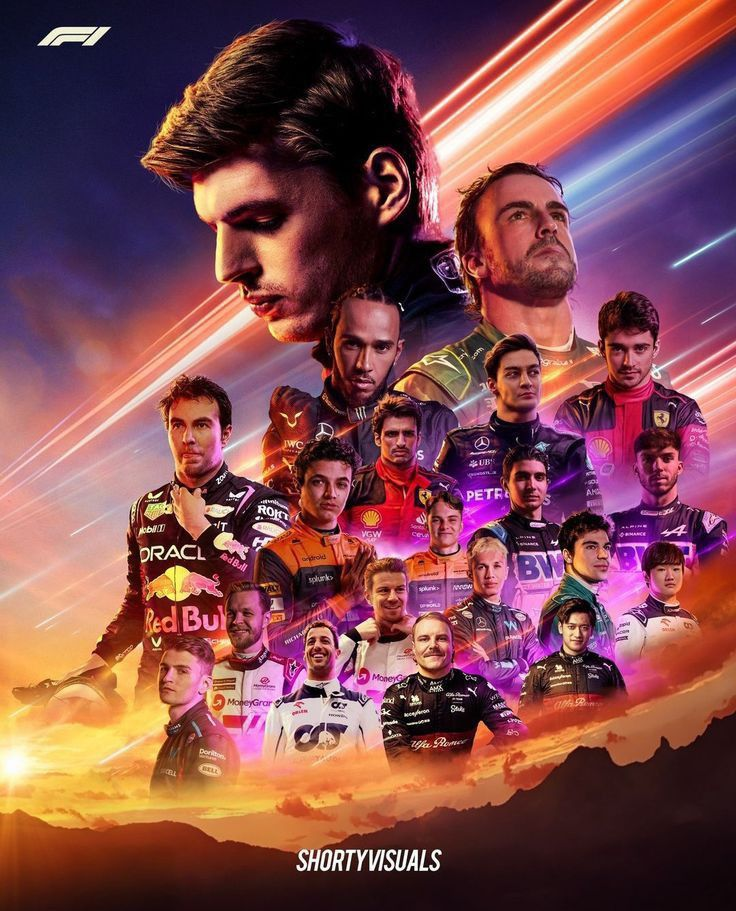
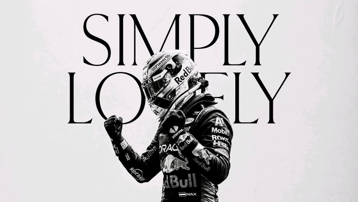
Baru kenal F1? Mulai dari sini.
Formula 1 terlihat rumit dari luar: ada ban berwarna, sayap yang bergerak, dan istilah yang asing. Tenang, semua orang pernah mulai dari nol.
Di bawah ini ada ringkasan singkat tentang jalannya akhir pekan balapan, jenis ban, bagian-bagian mobil, dan istilah yang paling sering kamu dengar.
Latihan bebas
Tim dan pembalap mencoba pengaturan mobil, mengenal sirkuit, dan menguji ban. Hasilnya belum menentukan apa pun.
Kualifikasi
Pembalap mengejar satu lap tercepat. Yang tercepat start paling depan (pole position), dan posisi start sangat berpengaruh.
Balapan
Hari utama. Pembalap menempuh sekitar 300 km, dan 10 besar mendapat poin untuk klasemen pembalap dan konstruktor.
Kenali mobilnya
Semua tim memakai ban dari satu pemasok, Pirelli. Warna di sisi ban menunjukkan jenisnya.
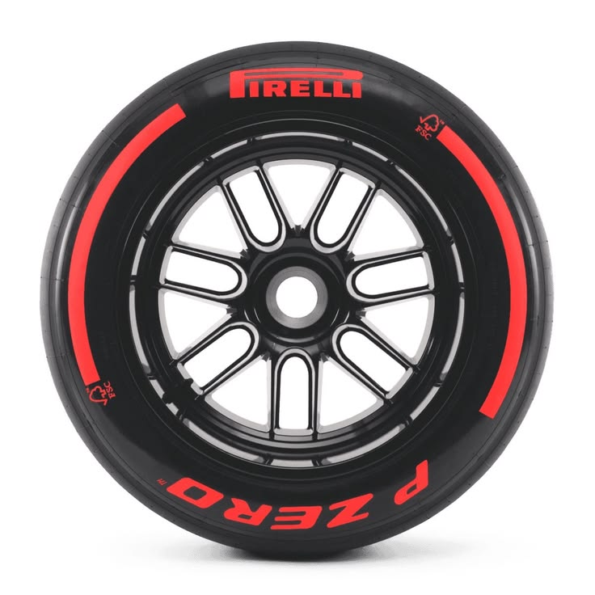
Soft
MerahPaling lengket dan cepat, tapi cepat habis. Cocok untuk kualifikasi.
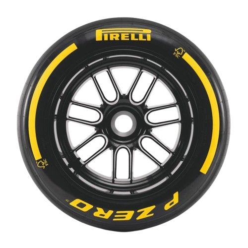
Medium
KuningSeimbang antara kecepatan dan ketahanan. Sering jadi pilihan utama.
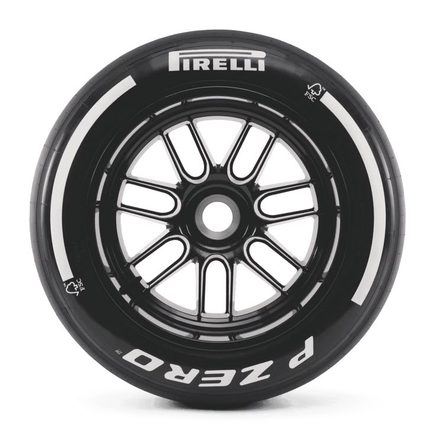
Hard
PutihPaling awet tapi lebih lambat. Dipakai untuk stint panjang.
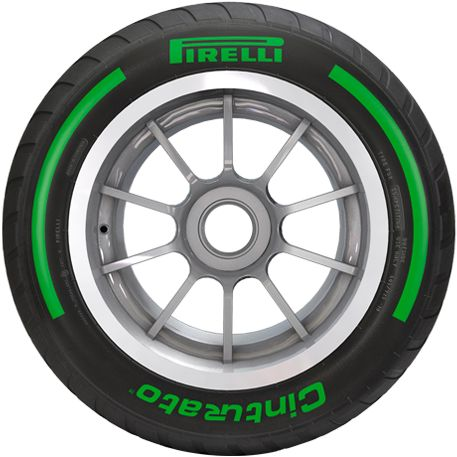
Intermediate
HijauUntuk lintasan basah ringan, saat hujan belum deras.
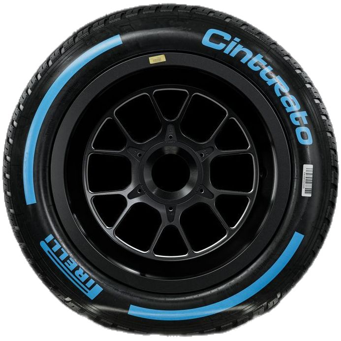
Full Wet
BiruUntuk hujan deras. Alurnya dalam untuk membuang air.
Istilah yang sering muncul
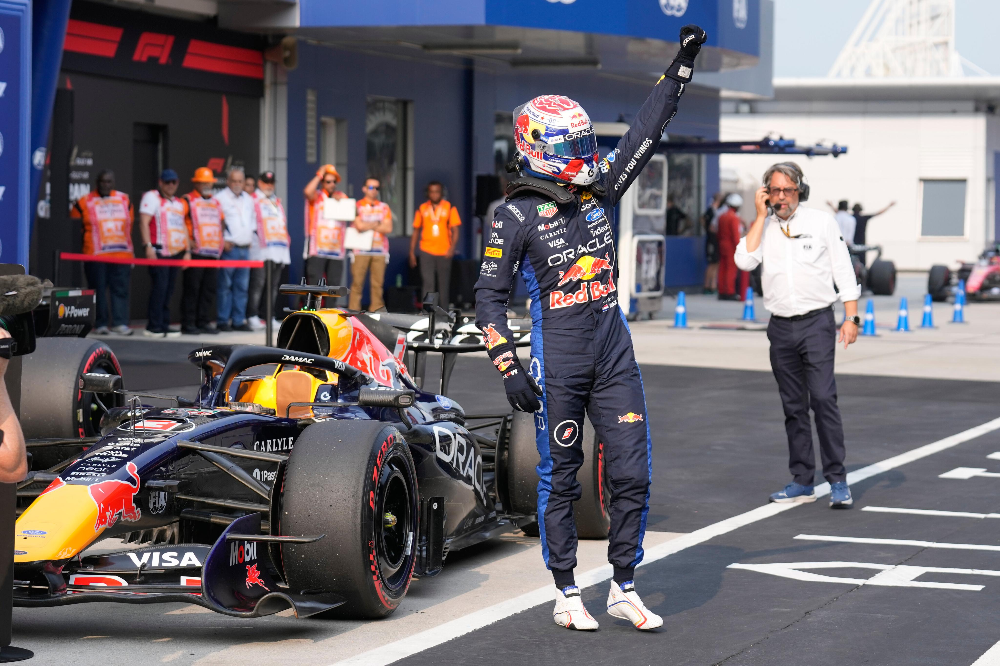
Pole Position
Posisi start paling depan, didapat pembalap tercepat di kualifikasi.
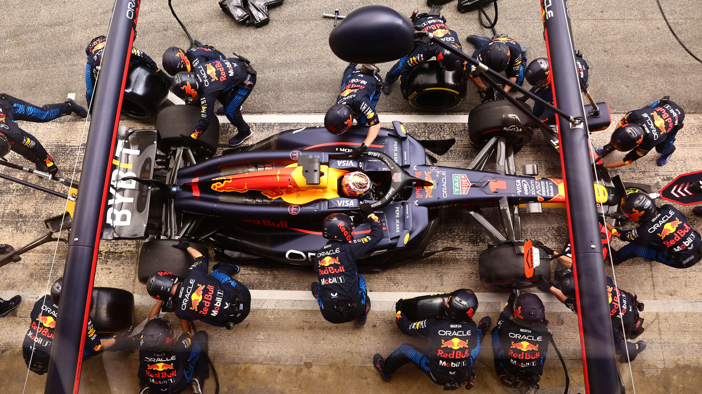
Pit Stop
Masuk garasi untuk ganti ban. Seluruh proses biasanya selesai dalam sekitar 2-3 detik.
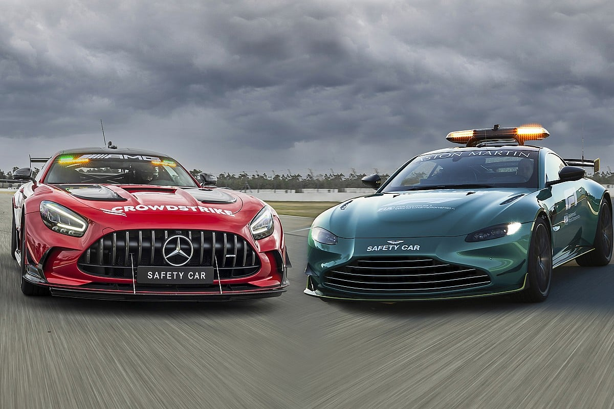
Safety Car
Mobil pengaman yang memperlambat semua pembalap saat ada kecelakaan atau bahaya di lintasan.
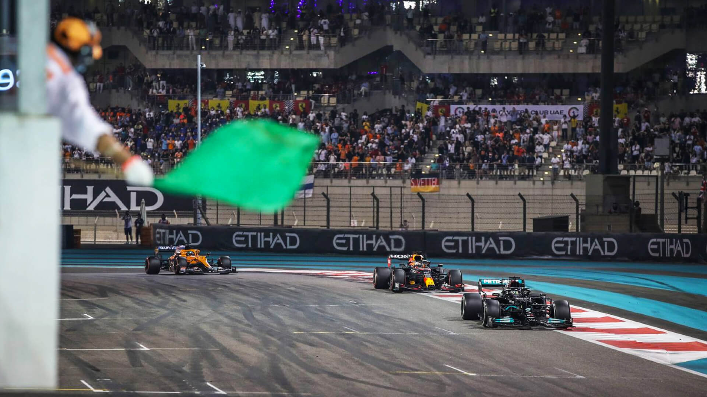
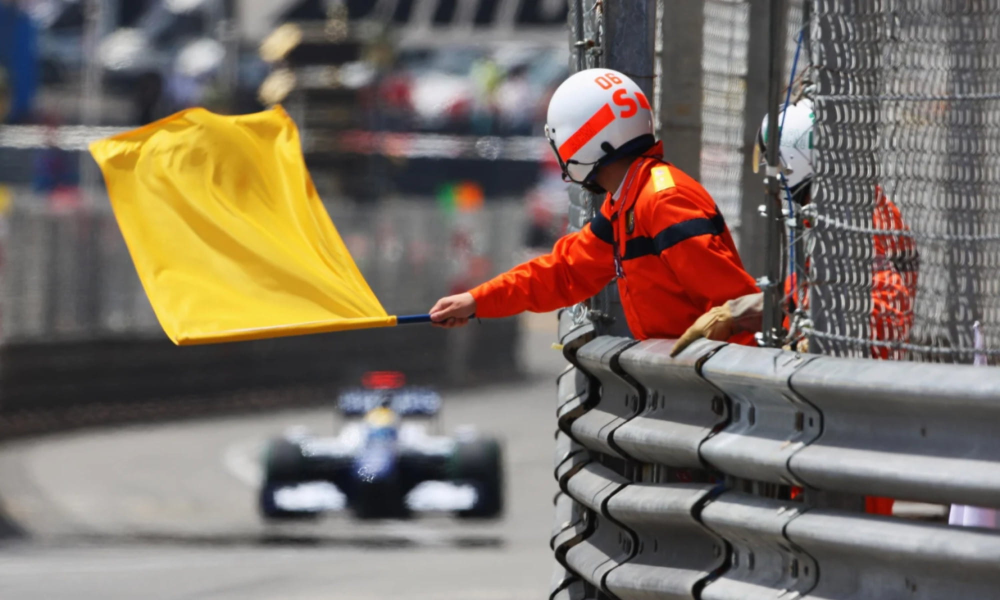
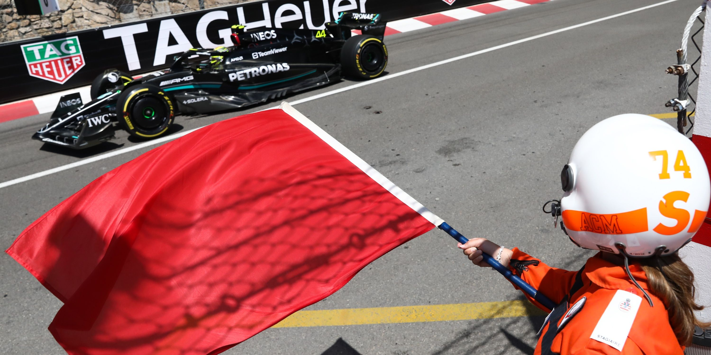
Website ini dibuat untuk apa?
Untuk senang-senang dan sebagai portofolio, supaya siapa saja bisa mengenal Formula 1 dengan santai. Website ini tidak untuk tujuan komersial.
Apakah ini website resmi F1?
Bukan. Website ini tidak resmi dan tidak berafiliasi dengan Formula 1, FIA, tim, atau pembalap. Untuk informasi resmi, kunjungi situs resmi Formula 1.
Foto dan logo berasal dari mana?
Foto, nama, dan logo adalah milik pemegang haknya masing-masing. Kalau kamu pemilik materi dan ingin kredit ditambahkan atau materi dihapus, hubungi lewat Instagram.
Ada data yang salah, bagaimana melaporkannya?
Kirim pesan lewat Instagram dan sebutkan halaman serta bagian yang keliru. Koreksi akan diperbarui sesempatnya.
Kenapa animasi latar Beranda kadang lambat?
Animasi latar Beranda memuat pustaka 3D dari internet. Kalau koneksi lambat, coba muat ulang halaman setelah koneksi lebih stabil.
Boleh tanya cara membuat website ini?
Boleh. Website ini dibuat dengan HTML, CSS, dan JavaScript sebagai ruang belajar. Tanyakan lewat Instagram di halaman profil.
- HTML
- CSS
- JavaScript